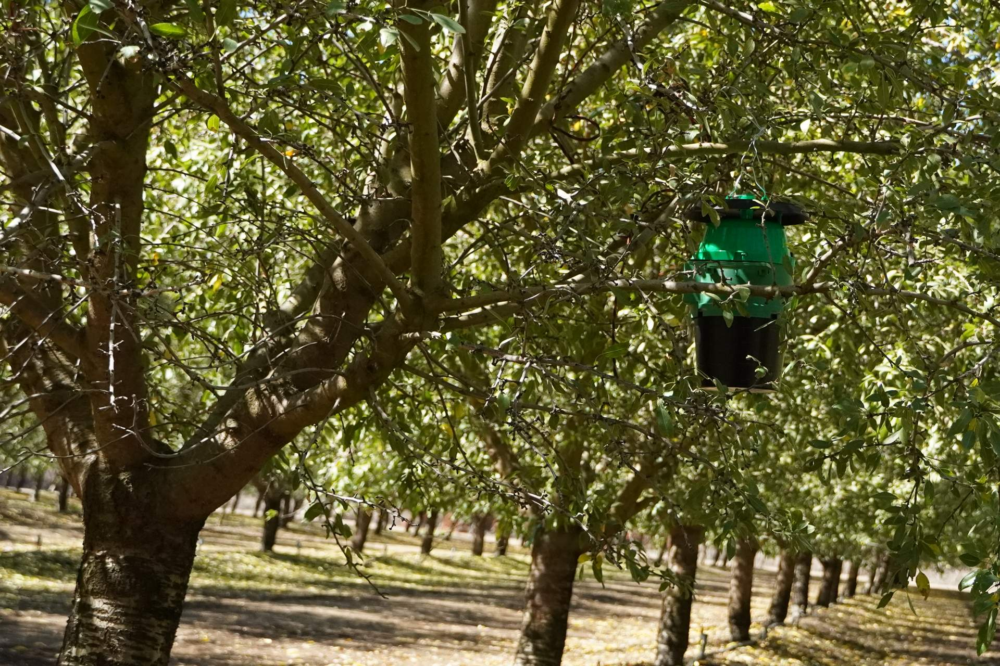

In the orchard
SmartTrap field node
- Two infrared detection layers
- Temperature and humidity sensor
- Onboard backup storage
- Solar-charged battery

Our product
Two infrared beams, one shared gateway, and a dashboard. The whole system is built around keeping a detection small enough to be cheap to move.
How it works
Emitters on one wall, receivers on the other. An insect has to break both layers, in order, to be counted.
The lure and funnel do what they have always done. The insect drops toward the chamber.
Infrared layers line the chamber, upper and lower. The second layer is what keeps one insect from being counted twice.
Time, count, temperature, humidity, battery. Written to onboard storage first, so a lost connection never costs a record.
Traps reach a nearby gateway over short-range Wi-Fi. The gateway carries the cellular connection on behalf of all of them.
Counts and conditions per trap, history charts, and heatmaps across the block.
In the orchard

At the edge of the block

On any device
Most automated traps take a photo and run it through an image model. That buys species identification, and it costs power, bandwidth, and hardware on every single trap.
SmartTrap gives up the identification and keeps the rest. For a grower watching one known pest, counting reliably matters more than naming what was counted.
| Feature | SmartTrap | Camera-based traps |
|---|---|---|
| Detection method | Infrared beam break | Photographs and image recognition |
| Data sent per detection | A short text record | An image |
| Species identification | No | Yes |
| Power needs | Pending | Pending |
| Hardware cost per trap | Pending | Pending |
| Ongoing data costs | Pending | Pending |
Power and cost figures are still being measured in the field. They go here when they are real numbers rather than estimates.
A beam break is a few dozen bytes. A photograph is not, and everything downstream of it — storage, bandwidth, processing — gets priced accordingly.
Traps talk to the gateway over short-range Wi-Fi. Only the gateway pays for cell service.
A trap that never moves doesn't need to keep asking where it is. Its position is saved at install, by scanning the code on the side of the trap.
The trap keeps a copy and so does the gateway. A dropped connection delays the data. It doesn't lose it.
Insects entering the trap pass through two layers of infrared beams. Each break is logged as a detection with a timestamp, and the second layer keeps the same insect from being counted twice.
No. Traps connect to a nearby SmartTrap gateway over short-range Wi-Fi, and the gateway sends data on over cellular. The gateway is the only part that needs cell coverage.
No. A beam break counts an insect; it doesn't identify one. SmartTrap is built for growers watching a known pest with a matched lure, where the question is how many and when, not what.
Each trap runs on a solar-charged battery.
Expected runtime, and how it holds up through a stretch of low sun.
Service intervals for lures, cleaning, and battery checks.
Not yet. Export is on the roadmap.
Supported formats and integrations.
They will be posted on the Documentation page once the production node is finalized.